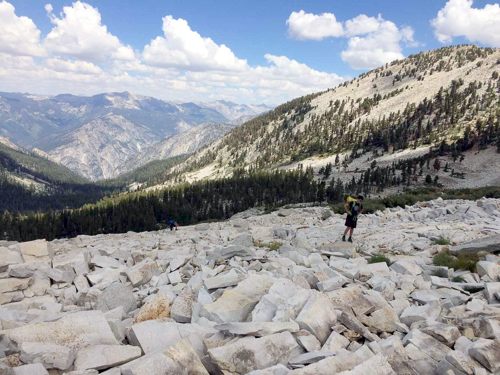
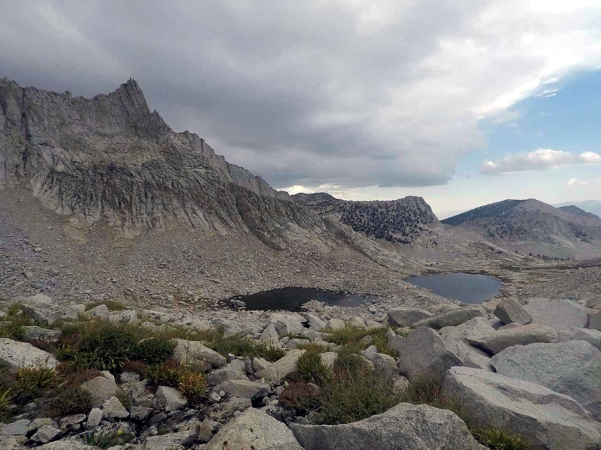
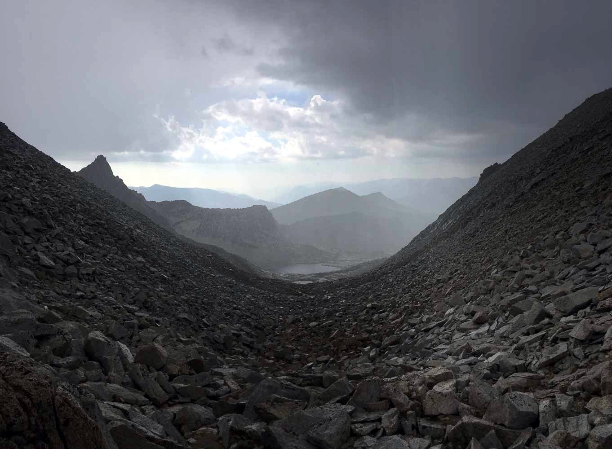
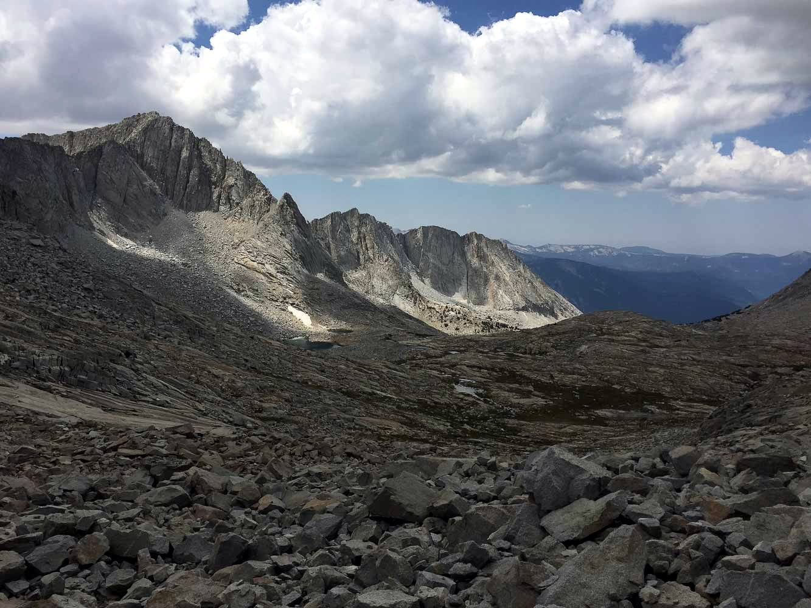
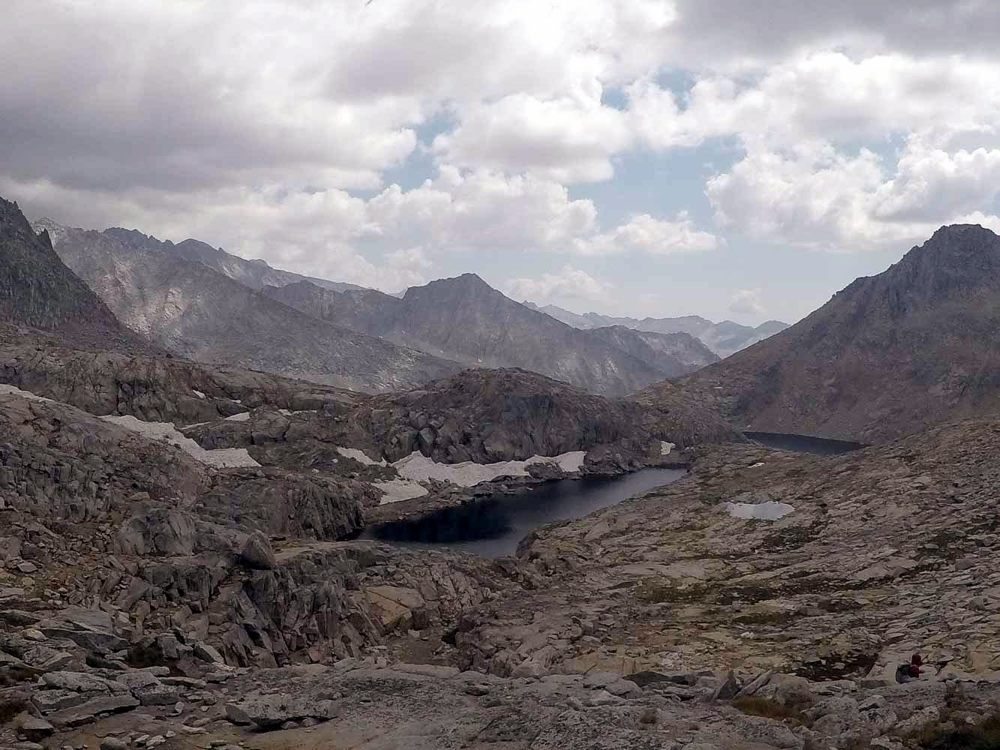

Kings Canyon - August 2018
Caltopo Route (We hiked the shortcut in blue because of the unexpected difficulty.) Feel free to contact me if you have questions about the route, it's a lot of relatively undocumented terrain!
The trip originated from a pretty spur-of-the-moment idea, when Richard, Jeffrey, and I were interested in doing a long trip over the summer. The original plan was a weeklong hike from Happy Isles to Devils Postpile, going through the Lyell Fork, Twin Island Lakes, and Minaret Lake. The Ferguson fire pushed us about 100 miles south, and due to the impromptu switch, we were pretty lucky to find ourselves backpacking at all!
Day 1:
The first night, we camped about a mile or two north of the lowest Sphinx Lake. It was a hot hike out of the canyon, and we saw a small wildfire on the opposite side of Bubb's creek about a thousand feet up the canyon wall.

There was some tough navigating right when we left the trail, having to hike through this weird swamp/marsh thing. We made it in the end...
Day 2:
We crossed Sphinx Col on the second day, though our plan was to do quite a lot more than just that. The push to Sphinx Col was very difficult and it rained when we reached the top.



We had to wait out the storm for about two hours at the top of the pass (huge lightning risk but we were caught right at the top). We were treated to a nice sunset at our campsite at the small tarn at the bottom of the pass.

Day 3:
Intensely beautiful day! We traversed the cirque above Brewer Lake to Brewer Col, some stunning country!

From Brewer Col, we tried to maintain as much elevation as possible, avoiding the drop into South Guard Lake to minimize the ascent elevation to Longley Pass.


Once we were approximately due west from Longley Pass, we cut directly up (this happens to be the path that minimizes the terrain angle). It was very late in the day, and we watched the sunset from the top of the pass.


The hike down from Longley Pass in the pitch black was the scariest thing I've ever done in my life. The flashlight lit about 5 feet of ground in front of me, and seeing Richard's light almost vertically below me was terrifying. I'm very thankful that all three of us made it down safely. We camped at the first lake west of Longley Pass that night.
Day 4:
Navigating down to Lake Reflection was a lot harder than we expected, and it took us at least 5 hours for some reason. Lake Reflection was amazing, one of my favorite lakes certainly!

That night we hiked all the way down to Junction Meadows, and crossing Bubbs creek was not so fun... We had a campfire that night to dry out stuff (we suck at crossing rivers), and we grilled my two pounds of leftover bacon. (Does that mean I had more than two pounds of bacon in the first place? Don't even ask me about my food choices on that trip...)
Day 5:
Hiked out. Fun trip!